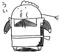
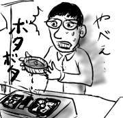
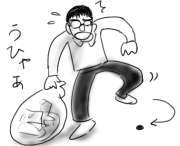
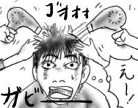
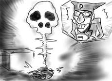

ここのところちっとも晴れないので、洗いざらしの、椎名誠がモンゴルで馬に乗りながら乾かしたようなパリっとしたジーンズではなく、なんだかウェザーリポートの虹に触れたような、洗った気がしないジットリとしたジーンズを履いて出社する羽目になっています(わけが分かりません)。
今日も地下300mの実験室で神様に報告です。「かみさま、おかしいです！」「ん、それ君のミス」
にべもない神様の返答で浮き彫りになる僕のウッカリぶり。
今日はTVアニメの「あずまんが大王」が最終回だったのでハンケチまで用意してTVの前にスタンバっていたのに、番組表が30分遅れていたらしくて、いきなり「俺達のWell歌夢」が始まって猛烈に萎えました。何してくれる！
「俺達のWell歌夢」ではゲストの尾藤イサオが「あしたのジョー」を熱唱し、拳をつきあげて「ジョーー！！」シャウトで締めたと思ったら、その後シームレスにあしたのジョーとほほコント(オチはジョーがジョー備薬を売ること)へ繋がる無茶苦茶な展開。ありかよ、こんな番組。
というわけでようやく始まった「あずまんが大王」をへーちょへーちょと視聴。10年ぶりくらいに「あおげば尊し」を聞いてなんとなくグッと来てみる。自分の卒業式の時は何の感慨も抱かなかったのに、他人の卒業式に感慨を抱いてどうする(注:アニメの登場人物です)。
話はコロット変わりますが、カルビーの「堅あげポテトチップス」が死ぬほどうまいです。
昨日新宿で買い込んで来た、華倫変『高速回線は光うさぎの夢を見るか』(太田出版)、すがわらくにゆき『快速！FREE NOTE Book!!』(ワニブックス)、ゴツボ×リュウジ『ササメケ(1,2巻)』(角川エースコミックス)などの漫画を一気に読んで寝てました。

あとは星野力『甦るチューリング』(NTT出版)をだらだらと読んでました。前作の『ロボットにつけるクスリ』(ASCII)の計算機コラムが明晰で面白かったのでこちらも買ってしまったのですが、前作同様「今の計算機科学はこじんまりとしててつまんないけど、まだまだおもしろいネタはあるはず」という著者の意見が色濃く反映されていて、読み物としてなかなかおもしろいです。でも、こういう本を積極的に読むのは、なんだかプロジェクトXをおもしろく見るのと同じような感じがして気恥ずかしいです(考え過ぎ)。
今年初めて梨を食べました。梨のように水分が多く含まれている果物ラブ。フルーツはすべからく瑞々しくあれと思います。
Web通販で予約しておいた山本精一「クラウン・オブ・ファジィ・グルーヴ」(P-VINE Records)が届きました。さっそくiPodへ移して聞きながら街を彷徨います。
多分、僕は世間一般の人よりは、"あちら側"へ踏み込みやすい質なのですが、これを聞きながら歩いていると、突如ものすごい多幸感に襲われ、駅の中だというのに、しばらく阿呆のように突っ立ってしまいました。耳に入り込んでくる全ての音の断片が気持ち良すぎたせいです。これは本気ですげえ。久しぶりの墓場級(墓場まで持って行く級)です。
その後、新宿で、はみ男子系の同期と悪の会合。南口すなわち朱雀の方向で待ち合わせをしたので、鶏肉を成敗に出かけます(こじつけ)。半生やら捏ねたのやら焼いたのやらがあまりに美味だったので、際限なく成敗し続けたところ、一人頭7000円になってしまいました。やりすぎたね。
しかし、そんなに払い過ぎた気がしないくらい美味しかったですよ。しぐれ先生、ありがとうございます(本人の知らないところで礼を)。
携帯電話の電波も届かない、光すら届かぬ闇の世界。地下300mにあるという実験室で、今、僕はテスト要員として働いています。神様がお作りになったテスト項目表をもとに、神様がお造りになったプロダクツを検査しているのです。人間どもの巣食う地上へ実戦配備できるかどうか、僕達の検査の結果でお決めになるのです。
トラブルっぽい動作を確認したら、すぐさま天国へ直通の伝声管を開きます。「あぁ！かみさまっ！かみさまが自分に似せてお造りになったというこのプロダクツ、少々動きが変でございます。これこれ、ここをこうするとおかしなメッセージを吐き出すのでございます。これはバグというものではございませんでしょうか。」すると、神様は、まさにフォーククルセイダーズの「帰って来た酔っぱらい」の神様の様な声でお答えになるのです。「うむ、それは仕様じゃー」
それを聞いて僕は「ははぁ」とかしこまり、テスト項目表に「Pass」と書き入れます。
そういうことを繰り返します。極楽上等！LOVE！極楽！
学生として名古屋に住んでいた時にすっかり洗脳され、時々無性に赤味噌が食べたくなる時があります。特に疲れてくるとそれが顕著です。きっと学生時代は常に疲れていたからに違いない。力の抜きどころがわからなかったとか、無知蒙昧なせいだったかも知れませんが、それは今もあまり改善されていません。
そんなわけで、帰りにコンビニで冷凍味噌煮込みうどん(アルミ鍋タイプ)をチョイス。
家に着くなり開封し、コンロにパイルダーオン！プロパンガスが真っ赤に燃えて希望とか勇気とか、なんかそういうの。
調理中、ふとコンロの火口部(?)に液体が落ちているのに気付きました。最初は「氷でもついてたのかな」と思っていたのですが、そのまま液体は増え続け、あれよあれよという間にコンロがダシびたしになる大惨事へと発展しました。アルミ鍋が破れたようです。「最初は弱火で1分」というのを忠実に守っていたつもりでしたが、点火時のフルスロットルで一気に最終防衛ラインが突破されたらしい。

これは何かい、点火した後で鍋を乗せなきゃいけなかったんですかい。激しい後悔に苛まれながら、中身をダシの滴るアルミ鍋から普通の鍋に移し替え、足りないダシを水道水で補ってなんとか味噌煮込みうどんは食べることができました。
しかしすぐに、コンロを外して大掃除をする羽目になったので、あまり食べた気がしませんでした。名古屋の思い出はせつないな(複雑な意味で)。
昨日は寝ぼけこそしなかったものの、調子に乗って飯を作り過ぎてダウン。
久しぶりに動けないくらい食った気がします。
朝、ゴミ出しをしようとゴミ箱からゴミ袋へ移し変えていたところ、ゴミ袋から抜け出て来た黒い物体が僕の足下を這い回り始めました。ヤツか！！咄嗟に臨戦態勢を整えたのですが、よく見るとイヤフォンの耳パッド(ゴム製)でした。驚かせやがって！

帰宅してから猛烈な睡魔の襲われたので、炊飯器をセットしてダウン。夜中に目が覚めてから、晩飯を作り始めました。こういうのはよくない。
まな板を用意するつもりが鍋蓋をつかんでしまったり、持ち直したまな板をコンロに載せてしまったり、全くもってやっていることがちぐはぐだ。つまり、まな板を用意する処理と、出しっ放しだった鍋蓋(先日、餃子の蒸し焼きに使用)を片付ける処理と、フライパンを用意する処理がスレッドセーフではないまま並行動作して予期せぬ結果を招きました。台所で作業するときは、必ずロックを取得してから処理を行うこと。
あと、寝ぼけてたらタマネギ１個を丸々刻んでしまいました。皿に山盛りの野菜(≒タマネギ)炒めを前に途方に暮れる深夜0時。
昨日のパンツァーフロントのせいで、戦場に駆り出され、右も左も分からないうちに戦友が狙撃によって一人、また一人と殺されて行くという「Medal of Honor」ばりの悪夢を見ました。戦場、超厳しいっスよ！
しかし、やがて戦局は訳の分からない方向へ転がりはじめ、川の両岸からクラスメートがナイフや弓矢で撃ち合うバトルロワイヤルを経た後、やおいっぽい美形キャラが僕を殺しにやってくるのを自動販売機に化けてやりすごすあたりで目が覚めました。訳が分かりません。
今日は髪を切りに出かけました。
美容師さんとの会話は「天気が悪い」「駅前のサティの模様替え」あたりの世間話デッキでなんとかなりました。
今日は店内空いているなぁとは思っていたのですが、洗髪後、二人の美容師さんが左右から同時に髪を乾かし始めた時は無茶苦茶びびりました。２つのドライヤから吹き出る温風で蹂躙されていく僕の髪の毛。これは一体何のサービスなんですか！それとも暇つぶし？

今日はいつもより長めに残して下さいと頼んだところ、1cmくらいしか切られなかったのであんまり代わり映えがしません。思わず泣きながら美容院をはしごするところでした。
昨日は気が付いたら気を失っていた(矛盾)ので更新できませんでした。平日の睡眠不足を週末に補います。
夜更けに、西原さん家が近めのメンバー(まさしろ, 山本七式, 僕)=「チカメンツ」で寿司屋へ出かけました。寿司屋は西原さん家スグ前なので、集合場所はおのずと西原さん家となります。
集合時間までまだ時間がありそうだったので、最寄り駅前を探索。中古ゲームショップがあったので入店すると、意外とドリキャスゲームの品揃えがよく、なんとな〜く「パンツァーフロント」を購入。コンバットデジQが出たせいで、何か感化されたのだと思います。
西原さん家到着後、いきなりドリキャスで斑鳩を開始。メンバが全員揃ってもプレイを止めないので「早く行かないとネタがなくなっちゃう」「閉店時間になっちゃう」と大層いやがられました。すいません。結局ポーズを押してから寿司屋に出発(超迷惑)。
寿司はそれなりにうまかったけど、季節のネタがありませんでした。すいません。
西原さん家に戻って来てから斑鳩を一撃でクリア！(迷惑)
その後、せっかく買ったんだからと「パンツァーフロント」を開封。トレーニングステージで何が何やら分からないうちに敵弾にて破壊されました。

こりゃやばいもんに手ぇ出した！(うすうす勘付いていました)